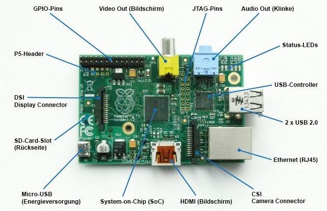

What is a Raspberry Pi?
Here you can find an introduction to this device and what it can do.
Introduction
A Raspberry Pi can be seen as a small and cheap computer. It is a device that can run an entire operating system and allow users to complete lightweight tasks, such as browsing the web or basic productivity. It comes in many varients, usually dependent on the version. Like most devices in technology, newer versions tend to cost more but also come with more up-to-date features. The Raspberry Pi is used all around the world in many different applications such as home projects and teaching individuals how to program.
Components

Figure 1: Components on a Raspberry Pi, taken from https://www.researchgate.net/figure/Raspberry-Pi-Components-Explanation_fig2_305668622
Much like a computer, a Raspberry Pi has memory, a processor and IO. In terms of IO, this can include USB, HDMI or audio ports. Due to the small form factor these are usually limited in performance. Additionally, there are also GPIO pins exposed that really open up the potential of what this device can do. Depending on the model, the amount of performance and IO will vary, however as technology progresses, each newer model contains more cost effective functionality.
Variants
| Model | Released | Price (CAD) | RAM | Processor | IO | Internet | Bluetooth |
|---|---|---|---|---|---|---|---|
| Raspberry Pi 4 Model B | 2019 | $47 | 1GB/2GB/4GB | 1.5GHz | USB 3.0 x2, USB 2.0 x2, Micro HDMI x2 | 2.4GHz & 5.0GHz, Gigabit Ethernet | 5.0 |
| Raspberry Pi 3 Model A+ | 2018 | $32 | 512MB | 1.4GHz | USB 2.0, HDMI | 2.4GHz & 5.0GHz | 4.2 |
| Raspberry Pi 3 Model B+ | 2018 | $47 | 1GB | 1.4GHz | USB 2.0 x4, HDMI | 2.4GHz & 5.0GHz | 4.2 |
| Raspberry Pi 3 Model B | 2016 | $47 | 1GB | 1.2GHz | USB 2.0 x4, HDMI | Wireless & 100 Base Ethernet | Bluetooth Low Energy |
| Raspberry Pi 2 Model B | 2015 | $45 | 1GB | 900MHz | USB 2.0 x4, HDMI | 100 Base Ethernet | |
| Raspberry Pi 1 Model B+ | 2012 | $33 | 512 MB | 700MHz | USB 2.0 x4, HDMI | 100 Base Ethernet | |
| Raspberry Pi 1 Model A+ | 2014 | $34 | 512 MB | 700MHz | USB 1.0, HDMI | ||
| Raspberry Pi Zero W | 2017 | $13 | 512MB | 1GHz | USB on-the-go, Mini HDMI | Wireless | 4.1 & Bluetooth Low Energy |
| Raspberry Pi Zero | 2015 | $7 | 512MB | 1GHz | USB on-the-go, Mini HDMI |
Operating System
Being a computer, a Raspberry Pi needs an operating system. Typically this will be a Linux Distribution which can include Raspbian or Ubuntu, however this can also be an IOT version of Windows 10. To install an operating system, you will need a Micro SD card and potentially an adaptor. Raspberry Pi's Imager is an easy way to install an OS and configure your device. If you are setting up your Raspberry Pi for the first time, there will be some one time configuration settings at boot.
GPIO Pins

Figure 2: GPIO Pins, taken from https://www.raspberrypi-spy.co.uk/2012/06/simple-guide-to-the-rpi-gpio-header-and-pins/#prettyPhoto